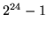
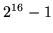
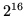

In the HTK language modelling tools, words and classes are
represented internally by integer indices in the range 0 to
 (16777215). This range is chosen to fit exactly into 3 8-bit bytes
thereby allowing efficient compaction of large lists of  -gram counts
within gram files.
-gram counts
within gram files.
These integer indices will be referred to subsequently as ids. Class ids are limited to the range 0 to  and word ids fill the remaining range of  to . Thus, any id with a zero most significant byte is a class id and all other ids are word ids.
In the context of word maps, the term word may refer to either an orthographic word or the name of a class. Thus, in its most general form, a word map can contain the ids of both orthographic words from a source text and class names defined in one or more class maps.
The mapping of orthographic words to ids is relatively permanent and normally takes place when building gram files (using LGPREP). Each time a new word is encountered, it is allocated a unique id. Once allocated, a word id should never be changed. Class ids, on the other hand, are more dynamic since their definition depends on the language model being built. Finally, composite word maps can be derived from a collection of word and class maps using the tool LSUBSET. These derived word maps are typically used to define a working subset of the name space and this subset can contain both word and class ids.